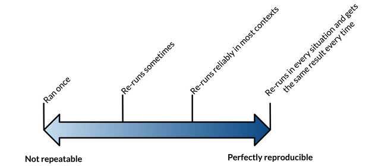
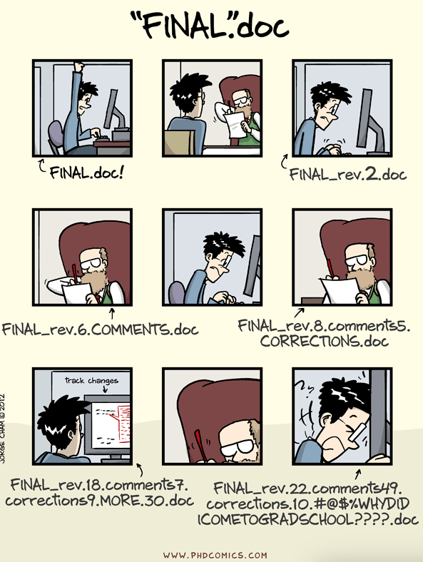
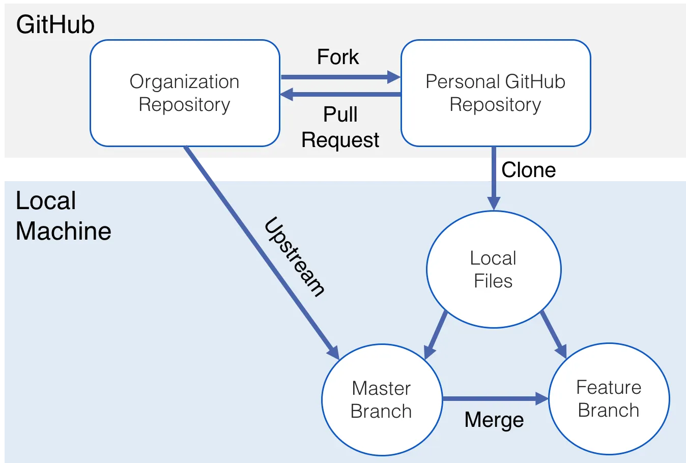

JSC 370: Data Science II
Week 2: Reproducible Research and Version Control
2026-01-12
Repeatability vs Reproducibility vs Replicability
These terms are often used interchangeably, but they are different.
Repeatability: Generating the exact same results when using the same data by the same person.
Reproducibility: Generating the exact same results when using the same data by a different person or group. If we can’t reproduce a study, how can we replicate it?
Replicability: Repeating a study by independently performing another study on new data.
Repeatability vs Reproducibility vs Replicability

Reproducibility
A different analyst/researcher re-performs the analysis with the
- same code and
- same data and
- obtains the same result
⚠️ If your results are not repeatable then they will not be reproducible!
Reproducibility

Reproducibility

Reproducibility
Barriers to doing reproducible work:
- Poor documentation
- Manual steps
- Non-transferable tools
- Incorrect training
- Time
Reproducible Workflow
Reproducible Research
In academia, incentives often prioritize publication. But many results are difficult to reproduce, so there’s a push to publish code, data, and the tools needed to re-run analyses.

Reproducible Research
- In computational sciences and data analysis, what is reproducibility?
- Definition: The data and code used to make a finding are available and presented so that an independent researcher can (relatively) straightforwardly recreate the result.
Reproducible Research
This still seldom happens. Two examples from Tim Vines DataSeer.ai:
- Data availability declines rapidly with article age (reported ~17% lower odds per year in one analysis).
- Reanalyses using the program STRUCTURE found a substantial fraction of published results could not be reproduced (reported ~30% in one study).
Reproducible Research
Scientific articles often include detailed methods, but they are typically insufficient to reproduce a computational analysis.
Roger Peng and Stephanie Hicks wrote: “Reproducibility is typically thwarted by a lack of availability of the original data and computer code.”
Scientists owe it to themselves and their community to keep an explicit record of all steps in a computational analysis.
Reproducible Research Do’s
- Start with a good question: make it focused and something you care about.
- Teach your computer to do the work from beginning to end (automation > manual steps).
- Use version control.
- Track your software environment (toolchain + package versions).
- Set a random seed for any random generation/sampling (e.g., train/test splits).
- Think about the entire pipeline (raw data -> cleaning -> analysis -> output).
Reproducible Research Don’ts
Do not do things by hand. This includes:
- Editing spreadsheets to “clean” them (e.g., removing outliers, ad hoc QA/QC)
- Manually editing tables or figures
- Downloading data by clicking around in a web browser
- Splitting data and moving it around manually
If something truly must be done by hand, document it explicitly.
Reproducible Research Don’ts
- Avoid point-and-click or highly interactive tools when possible.
- They often leave no trace of the steps.
- If you must use them, write down the exact sequence of actions.
- Save the data and code that generated the output, rather than the output alone.
Reproducibility Challenges
- Data size
- Build tools into your code to manage large datasets (chunking, efficient formats, parallelism).
- Store data in smaller chunks and write code that pulls and combines files automatically.
- Write metadata and use tools that support data organization.
Reproducibility Challenges
- Data complexity
- Use smaller “toy” subsets to regularly check reproducibility.
- Be explicit about training/validation/test sets.
- Use diagnostic visualizations.
- Workflow complexity
- Use README files (and keep them updated).
What is version control?
What is version control?
Version control is the management of changes to documents and code. Changes are identified by a revision (e.g., “revision 1”, then “revision 2”, …). Each revision is associated with a timestamp and the person making the change. Revisions can be compared, restored, and sometimes merged.

Why do we care?
Have you ever…
- Made a change to code, realized it was a mistake, and wanted to revert?
- Lost work (or only had an old backup)?
- Needed to maintain multiple versions (e.g., “final_final_v3”)?
- Wanted to compare two versions of your code to see exactly what changed?
- Needed to prove that a particular change broke (or fixed) something?
- Wanted to review the history of a file to understand why it looks like it does?
Why do we care? (cont’d)
In these cases (and many others), a version control system should make your life easier.
- Wanted to submit a change to someone else’s code (without emailing files around)?
- Wanted to share code and collaborate without overwriting each other?
- Wanted to see who did what, when, and where (accountability and provenance)?
- Wanted to experiment with a feature without disrupting working code?
A common workflow pattern
Git
Git was created by Linus Torvalds and originally described as “the stupid content tracker.”


Why Git?
Distributed architecture: you have the full history locally (you can work offline).
Efficient branching and merging: easy to switch between branches, supporting experimentation and collaboration.
Git is the dominant version control system in practice (Stack Overflow reports very high adoption).
A great reference: Pro Git (free online)
More on the name: Git naming (Wikipedia)
How can I use Git?
A few common ways to include Git in your workflow:
- Command line (most universal)
- VS Code Source Control panel (very common for Python work)
- GitHub Desktop (beginner-friendly)
- GitKraken (feature-rich GUI)
- GitHub web interface (quick edits + reviews)
More alternatives: Git GUI clients
What Git tracks

Key terms you’ll hear a lot
- Repository (repo): the project + its version history
- Commit: a saved snapshot with a message (and an author + timestamp)
- Branch: an independent line of development (safe experimentation)
- Merge / Pull request: integrating changes back together
- Remote: a copy of the repo hosted elsewhere (e.g., GitHub)
Git workflow

Setting up the workflow
- Go to GitHub and sign in.
- Create a repository (name it, choose public/private as appropriate, add a README).
- Clone it (copy it onto your local machine).
- Make sure Git knows who you are (
git config) and that authentication works (HTTPS token or SSH key).
Note: We assume Git is installed: https://git-scm.com
Cloning (visual)

Workflow for an existing repo
Start by syncing (if you collaborate):
git pull
Make changes in your editor.
Inspect what changed:
git status
git diff
Stage changes (choose what will go into the next commit):
git add <file>(orgit add .)
Commit with a clear message:
git commit -m "Explain *why* you changed it"
Push your commits to GitHub:
git push
Workflow for an existing repo (con’t)
Undo helpers (common):
- Unstage a file:
git restore --staged <file> - Discard local edits to a file:
git restore <file>
(Older syntax you may see online:git checkout -- <file>)
Hands-on 0: Introduce yourself
In terminal set up your Git identity (this writes to your global Git config):
Check what Git thinks your settings are:
(Press q to exit the pager.)
Hands-on 1: Remote repo
Goal: create a GitHub repo and make your first commit.
- Create a new repository on GitHub (e.g., JSC370). Include a README.md.
- On your computer, choose where you want the project folder to live. Change to that directory.
- Clone the repository (copy the HTTPS/SSH URL from GitHub). Then in terminal git clone https://github.com/
/ .git - Edit README.md (VS Code is fine).
- Stage + commit + push:
- git add README.md
- git commit -m “Edit README”
- git push
Hands-on 1: Remote repo
Some useful checks are to see what’s pending:
- git status
- See commit history:Hands-on 1: Remote repo

Hands-on 1: Remote repo

Hands-on 1: Local first
This creates a local repo (no GitHub yet), just to practice the cycle:
Hands-on 1: Connect your local repo to GitHub
On GitHub, create a new empty repo (do not add a README if you already have one locally). Then in your local project folder, add the GitHub repo as a remote named origin:
Confirm the remote was added:
Push your local commits to GitHub
(if your default branch is master instead of main git push -u origin master or if main doesn’t exist yet locally you can create or rename it git branch -M main then run the push command above.)
Removing a mistakenly staged/tracked file
If you accidentally added a file you don’t want to track (example: class-notes.docx):
This removes it from Git tracking but not from your computer.
Then prevent it from being tracked again using .gitignore
Example .gitignore
Example adapted from Pro Git
# ignore all .a files
*.a
# but do track lib.a, even though you're ignoring .a files above
!lib.a
# only ignore the TODO file in the current directory, not subdir/TODO
/TODO
# ignore all files in any directory named build
build/
# ignore doc/notes.txt, but not doc/server/arch.txt
doc/*.txt
# ignore all .pdf files in the doc/ directory and any of its subdirectories
doc/**/*.pdfBranches, Forks, Pull Requests, Merge Conflicts
A typical flow is: branch (or fork + branch) → pull request → merge → resolve conflicts (if needed)
These concepts make collaboration (mostly) painless:
- Branches: work in parallel without breaking
main - Forks: work on a copy of a repo when you don’t have write access
- Pull Requests: propose + review changes before merging
- Merge conflicts: what happens when Git can’t auto-combine edits
Branch vs Fork
Branch = a new line of work inside the same repository
Fork = your own copy of the entire repository under your account
Rule of thumb:
- Working in a shared class/team repo → branch
- Contributing to a repo you can’t write to → fork
Branch
- Repo:
course-repo - You create:
student/meredith-lab2 - You push to the same repo
- PR:
student/meredith-lab2 → main
Best for: teams/classes with shared access
Fork
- Upstream repo:
org/course-repo - Your fork:
yourname/course-repo - You work in your fork (often on a branch)
- PR:
yourname:branch → org:main
Best for: open-source external projects with no write access
Branches: what problem do they solve?
Without branches:
- Everyone edits
main - Work collides
- It’s hard to experiment safely
With branches:
mainstays stable- Each feature/bugfix happens on its own branch
- Changes are merged back only when ready
Branches are easy in Git: creating/switching is fast.
Branch naming conventions
Industry-style examples: feature, bugfix, hotfix, release, documentation
feature/lab1bugfix/path-imagesdocs/update-syllabus
Tip: use short, descriptive names. Avoid temp and final2. Here are some additional conventions
Branch naming convention for the course
Course pattern student/<name>-lab1
Example: student/meredith-lab2
Why this works:
- communicates who owns the branch
- communicates what it’s for (e.g. lab number)
- avoids confusion with repo folders (the
/is just naming)
Note
Branch names are labels, not file paths. Tools may group student/* branches together, but Git treats the whole string as the branch name.
Common branch workflow
- Start from an up-to-date
main - Create a new branch
- Make changes and commit on the branch
- Push the branch to GitHub
Branch workflow
What do switch and -c mean?
git switch is the Git command to move between branches
(older ways often use git checkout for this).
git switch main
“Move my working directory to themainbranch.”git switch -c student/meredith-lab2
-cmeans create a new branch and switch to it immediately.
So this is equivalent to two steps:
Why do we start from main and pull?
- Ensures your branch starts from the latest main
- Reduces merge conflicts later
- Makes your Pull Request easier to review
How these concepts connect
- Branch: where you do your work safely
- Commit: save a snapshot with a message
- Push: publish your branch to GitHub
- Pull Request: ask to merge your branch into
main - Merge: integrate the branch work into
main - Conflict: Git needs you to decide how to combine edits
Pull Requests: what are they?
A Pull Request (PR) is:
- a proposal to merge one branch into another (often →
main) - a review space (comments, approvals, requested changes)
- a record of what changed and why (discussion + diff + commits)
PRs are the standard way to collaborate on GitHub.
Why use Pull Requests?
PRs help you:
- catch bugs early (someone else reads your diff)
- enforce project standards (formatting, tests, style)
- document decisions (“why did we do this?”)
- reduce “surprise merges” into
main
What makes a good Pull Request?
- Small enough to review (avoid mega-PRs)
- Clear title + description
- Explains intent: what changed and why
- Screenshots/output examples when relevant
- Links to an issue (if you use issues)
- Includes only relevant files (no accidental large data, secrets, etc.)
Example Pull Request terminal commands
# Start from main and get the latest changes
git switch main
git pull
# Create a new branch for your lab work
git switch -c student/meredith-lab2
# Do your work (edit files in VS Code or any editor)
# (example files you might create/edit)
# - train.py
# - requirements.txt
# - README.md
# Check what changed
git status
git diff
# Stage and commit
git add train.py requirements.txt README.md
git commit -m "Lab 2: add reproducible model training script"
# Push the branch to GitHub
git push -u origin student/meredith-lab2
# Open a Pull Request on GitHub:
# student/meredith-lab2 --> main
# After review changes are requested:
# Make edits, then repeat add/commit/push
git add .
git commit -m "Address PR feedback"
git pushMerging: what does it mean?
Merging integrates two lines of work by combining their histories:
- Fast-forward merge:
mainsimply moves forward (no divergence) - 3-way merge: Git creates a new merge commit that joins two lines of work
Either way, the goal is the same: integrate branch work into main.
Merge conflicts: what are they?
A merge conflict happens when:
- two branches edited the same lines in the same file, and
- Git can’t determine how to combine them safely
Important:
- Conflicts are normal in collaboration
- They’re not “errors” so much as “decisions Git asks humans to make”
When do conflicts happen most?
- Long-lived branches (you drift far from
main) - Many people editing the same file
- Moving/renaming files while someone else edits them
Preventing conflicts (best practices)
- Pull often (or merge
maininto your branch regularly) - Keep PRs small and merge them sooner
- Avoid huge “format everything” commits mixed with logic changes
- Communicate: “I’m editing
slides/week2.qmdtoday”
What a conflict looks like
Git inserts markers like this into a file:
Resources
- Git everyday commands: man giteveryday in terminal
- GitHub’s cheat sheets: https://github.github.com/training-kit/
- Pro Git (free online): https://git-scm.com/book
- Git exercises: https://gitexercises.fracz.com/
- GitHub Guides (YouTube): https://www.youtube.com/user/GitHubGuides
Other tools to explore
- Jira: issue/task tracking + workflow management
- Git + Jira integrations exist via many clients